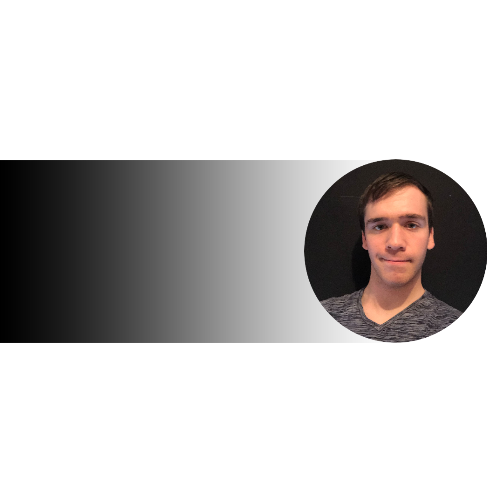

Dominic Hutchinson
Home
About Me
Why IT?
Ideal Job
Contact

Learn More
Back to top
About Me!
Contact Details:
RMIT Student ID: S3943438
Phone: 0422549119
Email:
S3943438@student.rmit.edu.au
GitHub Repo:
https://github.com/domHutchinson
Linkedin Page
Designed By: Dominic Hutchinson, 2022